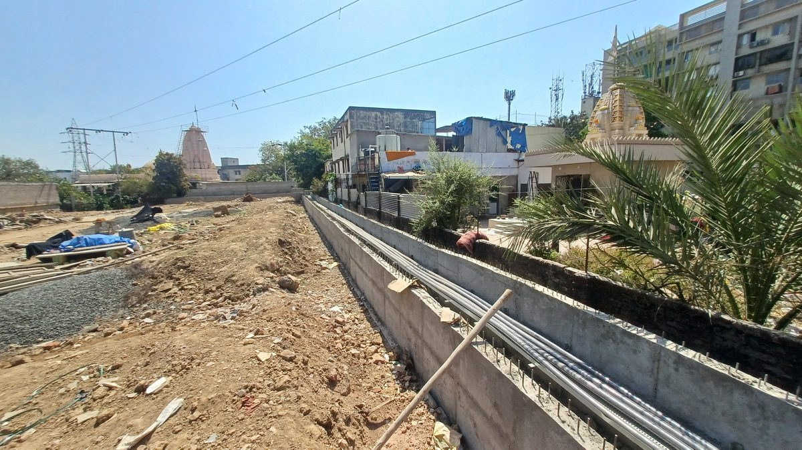

RDSS Programme · UGVCL
Overhead-to-underground conversion, Bopal
Conversion of 11kV overhead distribution to underground cable across the Bopal area of Ahmedabad under the Revamped Distribution Sector Scheme, executed as a channel partner to L&T Construction. The scope covered the civil groundwork, the cable route and the switchgear infrastructure that replaced the overhead network.
- End User
- UGVCL
- Executed Under
- L&T Construction
- Location
- Bopal, Ahmedabad
- Scope
- OH-to-UG conversion, RMU & DTR foundations
- Over 90 RMU foundations and 50 DTR foundations cast to utility-approved drawings around the 66kV substation feed.
- Route survey and underground utility detection ahead of excavation in a dense residential and commercial area.
- Trenching, ducting and multi-core HT cable laying, with roads and footpaths reinstated on completion.
- Sequenced to keep existing supply live, with changeover and energisation carried out under utility permit.